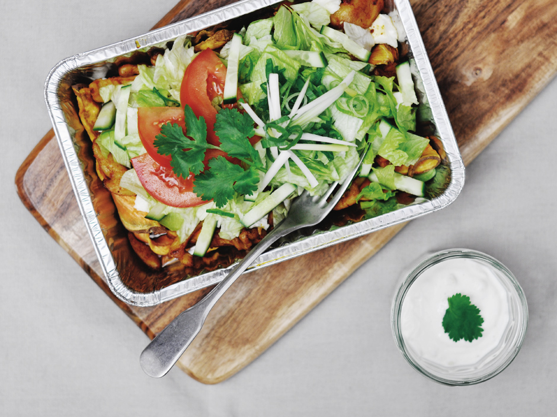

Kapsalon
Info over de Kapsalon
Een aantal jaar geleden is de kapsalon ontstaan in Rotterdam-West in de wijk Delfshaven bij shoarmazaak El Aviva. De bedenker van de kapsalon heet Nataniel 'Tati' Gomes.
Voor 4 personen ingredienten:

- 700 gram verse Vlaamse friet
- 500 gram shoarmareepjes
- 100 gram geraspte Goudse belegen kaas 48+
- 1/2 komkommer
- 100 gram gesneden ijsbergsla
- 100 ml Turkse knoflooksaus
Tijd:
- Bereidingstijd: 15 min
- Oventijd: 30 min
Bereidingswijze
- Verwarm de oven voor op 200 Celsius.
- Bak de frites ca 25 min in de oven.
- Verhit ondertussen een koekenpan met een antiaanbaklaag en bak de shoarma zonder boter
of olie voor ongeveer 8 min.
- Schep de friet in de aluminium schaal en schep de shoarma erop.
- Verdeel de kaas over de shoarma en zet ca 5 min in de oven tot de kaas gesmolten is.
- Halveer ondertussen de komkommer in de lengte en snijd het in plakjes.
- Snijd de tomaten in dunne plakken.
- Neem de schaal uit de oven en verdeel de sla, tomaat en komkommer erover.
- Doe daarna de knoflooksaus erover.